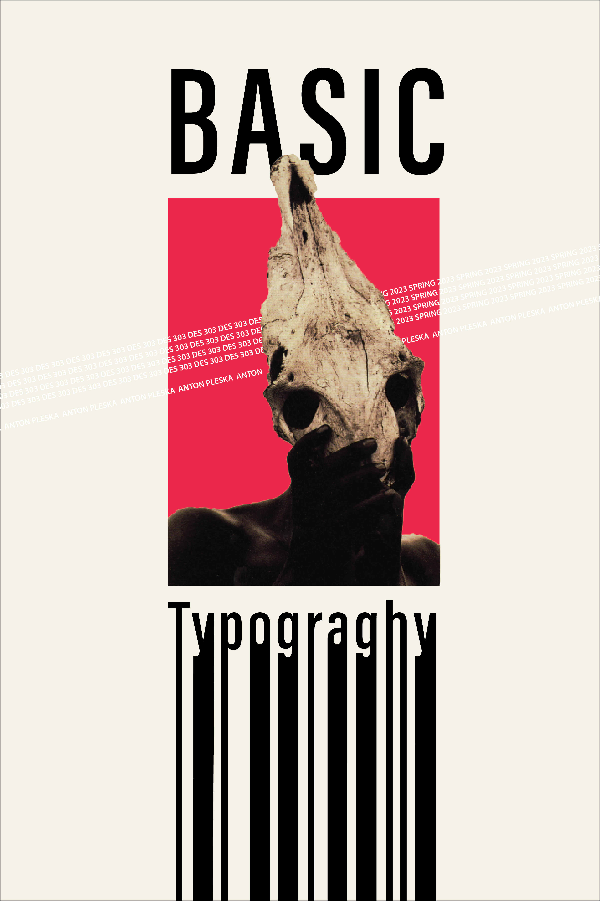

Vinyl Album Cover
Shake Shook Shaken by the Do
An album by The Dø, a Finnish-French indie pop band, sends you onto a journey, an exploration of different worlds.
With various instrumentals to develop a futuristic syncopated electronic beat. The power of the music sends the listener on an adventure.
As a listener I felt like I was the protagonist passing through different multiverses of a dystopian, or apocalyptic, or space odyssey.
I closed my eyes and felt like I was witnessing the beginning and end of the world, the universe, simultaneously.
This album sends you drifting and experiencing everything all at once. designed a cover that reflected a balance between
mysterious and enriching to the music.


Stationary
The development of a brand does not solely depend on the ability of a designer to present their personality but also showcase the
technical fundamentals that they possess. In the creation of a logo, the utilization of typography, colors, and shapes, further enhance
designs and how memorable a logo can be. The simplicity and prominence of a logo increases its success and versatility.
These principles are vital to such designing of stationeries-containing a letterhead, business card, and envelope-within the given arrangements.
The contrasting dark and light colors provide a professional and characterized design; allowing the logo to retain its size to be
recognizable and flexible for any format. In this self branding of a stationary, I created a simplistic logo that advertised professionalism.
My typographic choices displayed an arrangement that is legible from various sizes.

Magazines
Being diverse in spread designs depends on legibility, creativity, and a good sense of hierarchy. Magazine layouts require immense amounts of
typographic knowledge that must be displayed within every spread with body text, headers, subheaders,etc. Imagery is also important as it
propels the idea of the magazine cover or spread, it is the first impression before anything else is read.
In all the magazines, I gave context to the text and contents that would be read about through visual storytelling when designing the covers.
The job of the designer is to interpret and translate the necessary information needed for the reader to understand what the story is all about.
While manipulating type and image, I had to form a range of stylistic choices, showing variety and versatility in my designs.
Posters
Traditional, Modern, Contemporary
Designing 3 types of posters for a Basic Typography called Traditional, Modern, and then Contemporary. Traditional posters usually have
a central alignment, modern posters often are gridded and strict to design rules, contemporary posters are often a retaliation against strict
design rules. Different variations of these styles are created and displayed.
Traditional posters usually have a central alignment, modern posters often are gridded and strict to design rules, contemporary posters are often a
retaliation against strict design rules. Different variations of these styles are created and displayed. With traditional I went for an
art deco style, it was clean and consisted of few colors, with a central alignment or a symmetrical composition. In modern there
are various styles, some in swiss design, some in current design styles. Contemporary had the most fun, there were no rules, it
was just pure creation, no need for certain typefaces or strict formatting. With contemporary, I could create cohesive and thematic
variations of contemporary posters.
